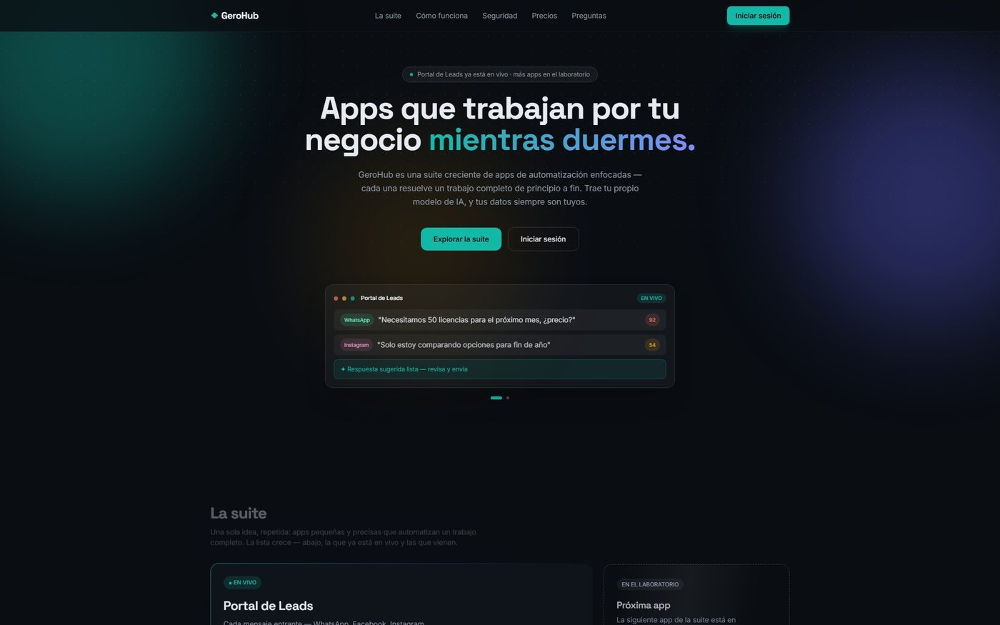
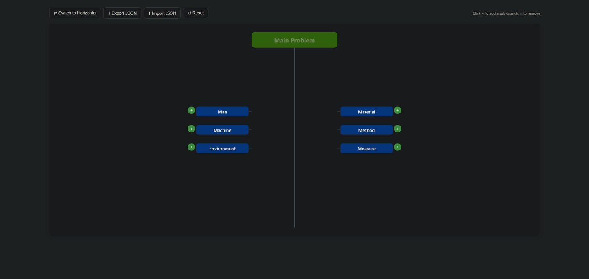
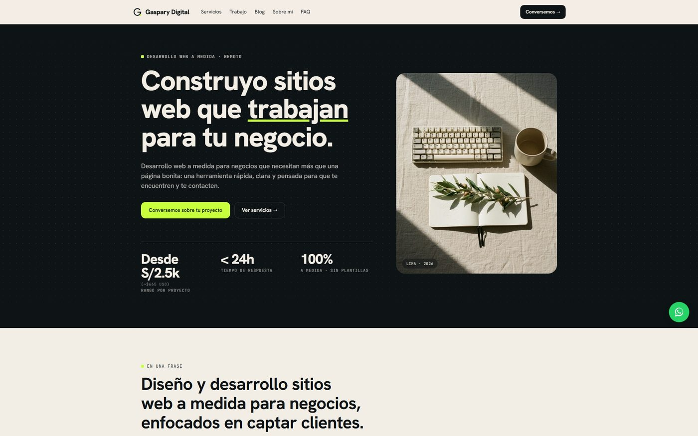

Data and BI Analyst · Industrial and Systems Engineer
From the data model to the dashboard people actually use.
Four years in analytics and data quality. I model relational databases, write advanced SQL, build ETL pipelines and carry the result through to dashboards management actually reads. Currently coordinating data quality for BBVA at NTT DATA.
- SQL
- MySQL
- SQL Server
- BigQuery
- Python
- Power BI
- Tableau
- Looker Studio
- Power Query
- ETL
- ER modelling
- Stored procedures
- Query tuning
- Data governance
- Data QA
- Advanced Excel
- Git
- Looking for
- Data, analytics and BI roles
- Currently
- QA Coordinator and Data Analyst · NTT DATA, client BBVA
- Based in
- Lima, Peru · UTC−5 · remote or hybrid
- Languages
- Native Spanish · English C2 (EF SET)
Selected work
-
Data · Consulting
GESTKOR database
-
Data · Predictive model
Taxi fare model
-
Web application · Own product
GeroHub

-
Web application · Quality tool
Ishikawa Creator

-
Web application · Client work
Mallas Trujillo
-
Web application · Client work
Mi Malla
-
Android · Wear OS
Plenty Tap
-
Desktop · Open source
Display Preset
-
Website
Gaspary Digital

Nothing published in this category yet.
Track record
-
2023 — now
QA Coordinator and Data Analyst
NTT DATA Peru · client BBVA
SQL-based data integrity validation across corporate banking reporting. I automated cleaning routines and test script generation with generative AI, cutting manual effort by roughly 40%.
-
2022 — now
Data and process consultant
Grupo Korus · GESTKOR system
Full redesign of the corporate database behind a retail maintenance management system: data flow diagrams, entity-relationship model, normalisation, stored procedures and query tuning.
-
2022 — 2023
Data Analyst
Abonos Terrasur
End-to-end automated Power BI dashboards that removed daily manual reporting, plus migration of isolated databases into a central structure.
What I work with
Data architecture
Entity-relationship modelling, data flow diagrams, normalisation, stored procedures, triggers, indexes and query tuning.
Analytics and BI
Python, SQL (MySQL, SQL Server, BigQuery), Power BI, Tableau, Looker Studio, Power Query, ETL and exploratory analysis.
Quality and governance
Software quality lifecycle, agile testing, TDD, and data governance standards in regulated environments.
Product engineering
HTML, CSS and JavaScript without heavy frameworks; Kotlin with Jetpack Compose and Room; edge deployment.
Open to a conversation
If you are looking for someone who understands the data and can also build on top of it, write to me and we will see whether it fits.